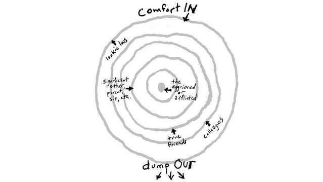

Code
rep(demeaning, n) =
rep(dehumanising, n) =
n * trauma Let’s figure out how to be better humans to each other
Dr Charles T. Gray, Datapunk ![]()
``
rep(demeaning, n) =
rep(dehumanising, n) =
n * trauma This document was copied from here: Coding of Kindness
Many communities seek to create inclusive and productive spaces for their members to work together by documenting their values in a Code of Conduct (CoC).
A typical feature of these codes is a list of behaviours that the community consider to be harassment. The code of conduct is, in part, a declaration of behaviours that the community considers to be unacceptable. The code also details the consequences for members of the community that commit these behaviours.
This is commendable and necessary. As our communities increase in size and diversity, we cannot assume that all members have the same understanding of what is acceptable and what is not. Documenting our values is useful to ensure they are shared throughout the community. Documenting the consequences for violating those values is useful for giving community members assurance that the community are serious about upholding those values.
This document is intended to extend a CoC by giving active, positive guidance on how people in a community can support members of their community who have, or are, experiencing some form of trauma.
We believe most CoCs are limited by their centering of the perpetrator and their negative behaviours. The traumatic consequences for the survivor are neglected by most CoCs. And community members looking for guidance on active, positive contributions they can make during challenging personal situations are left unsatisfied.
We propose here a Coding of Kindness that addresses how we support those who live with trauma, which includes those who experience the kind of harassment defined in CoCs, who we may also be supporting through the formal process of making a report. Those who are perceived as different are frequently dehumanised, however inadvertently, by systems and biases. A Coding of Kindness extends on a Code of Conduct to question how we can acknowledge and support the many in our community who have already experienced harassment and suffer trauma as a consequence. We call it a ‘coding’ to signify the evolving and open-ended nature of this extension, and evoke the active quality of it’s advocacy and allyship. This is community authored, and pull requests, and discussion of issues are warmly invited.
A Coding of Kindness reframes Code of Conduct to address the trauma of inequality and harassment with the key qualities of:
Our primary objective is to create a safe space that is inclusive. A person’s safety can be reduced in many ways. Here’s an example:
You make me uncomfortable because your lived experience is sad and I feel traumatised just thinking about it. I am angry at you for exposing me to trauma.
This reaction is human and understandable. But it’s not inclusive; and it’s not safe for either person in this exchange.
A safe space is one where people feel safe to be themselves. If we make them feel their lived experience is a shameful secret that can hurt others, we are dehumanising them.
Many life experiences expose people to complex combinations of traumatic demeaning and social stigma. Coming out as gay can mean losing your home when your family rejects you, in addition to judgements from incidental people encountered. Thus, the original incident of trauma, family rejection, is the beginning of a cascade of traumatic events.
If we add the requirement of proof of malicious intent, as a typical CoC does, then we put the person experiencing trauma in an untenable position. They cannot explain the complexity of why they are experiencing the consequences of trauma; they cannot provide a single incident, or a perpetrator. And if they attempt to explain the complexity, they are accused of traumatising others.
Our world is far from idyllic, especially for those who identify as minorities. A space that is safe and inclusive invites those from other lived experiences. This can be startling in how challenging it is. It can be traumatic to hear others’ stories. But it is unfair to expect others to anticipate what life experiences you will and will not find traumatic to contemplate. We find valuable perspectives on this in the (Guide to Allyship [1]):
Being an ally is hard work. Many of those who want to be allies are scared of making missteps that get them labeled as “-ist” or “-ic” (racist, sexist, transphobic, homophobic, etc). As an ally, you too are affected by a system of oppression. This means that as an ally, there is much to unlearn and learn—mistakes are expected.
As an ally, you’ll need to be willing to own your mistakes and be proactive in your education.
If you decide to become an ally, but refuse to acknowledge that your words and actions are laced with oppression, you’re setting up yourself to fail. You will be complicit in the oppression of those you purport to help. You cannot be a true ally. Know that if you choose not to heed this, you wield far more power than someone who is outwardly “-ist” or “-ic” because you are, essentially, a wolf in sheep’s clothing. (Guide to Allyship)
rep(demeaning, n) =
rep(dehumanising, n) =
n * trauma Demeaning language can be a trauma multiplier. Repeated exposure to dehumanisation leads to trauma. We’re all traumatised by the dehumanisation of demeaning experiences; we’ve all been demeaned by someone.
This is a topic of much discussion in the R-Ladies community; in many contexts, from coding to presenting to teaching. How to manage interpersonal relations when repeatedly being dehumanised?
In particular, when the offense is inadvertent? To illustrate the challenging nuance of inadvertently demeaning language, we consider an example from Melissa McEwan’s thoughtful essay on Harmful Communication [2].
Alex has a PhD in Subjectology. Jamie knows that Alex has a PhD in Subjectology, yet, during a discussion of Subject, Jamie, who has an interest in and is reasonably knowledgeable about Subject, condescendingly explains basics of Subject to Alex without regard for Alex’s demonstrable proficiency. Alex expresses that Jamie’s insistence on explaining basics makes Alex feel as though Jamie does not respect Alex’s competency or intellectual capacity. Jamie, whose intent was actually to impress Alex, insists that hir [sic] intent was not to make Alex feel that way. Alex makes a valiant attempt to explain why Jamie behaving as though Alex doesn’t know the basics of Alex’s professional field is disrespectful, at which point Jamie gets miffed, reiterates that the intent was not to make Alex feel bad, accuses Alex of looking for things to get mad about, and misrepresents Alex’s good faith attempt to address demeaning language as a personal attack on Jamie.
Thus, what had started out as an inadvertent slight becomes a harmful exchange, as Jamie refuses to acknowledge that the effect of the action irrespective of its intent was hurtful to Alex, and deflects accountability by casting Alex as unreasonable.
It’s easy to fall prey to the trap of what Melissa McEwan calls magical intent.
Magical Intent is the principle by which someone who has said or done something offensive, hurtful, rage-making, marginalizing, and/or otherwise contemptible argues that the person to whom they’ve said or done it has no right to be offended, hurt, enraged, alienated, and/or otherwise disdainful because their intent was not to generate that reaction.
The hard truth is that we all employ demeaning language at times. Especially with those whose lived experience is very different from our own. Some things we find easy, they find hard, and so forth. And it’s very easy to wrongly extend this to inadvertently demeaning assumptions about others’ capacity. Furthermore, usual protocols for interacting might be ill fitting and inconsiderate, given the disadvantage the person has overcome.
If you decide to become an ally, but refuse to acknowledge that your words and actions are laced with oppression, you’re setting yourself up to fail. (Guide to Allyship)
It’s not that we might hurt others, it’s how we behave when we inevitably do hurt others that really matters. Allyship is about taking responsibility for how our own lived experience informs our view of others’ experience.
How to avoid harmful interactions such as Alex and Jamie’s is an open question discussed much in fora such as R-Ladies chapters.
The Guide to Allyship suggests a collection of Dos and Don’ts of allyship as a starting place.
THE DON’TS
THE DO’S
The problem with the cognitive dissonance of denial is that it brings trauma for the instigator.
An important issue to note here, is that however painstakingly patient the attempts to communicate the hurt are, they are received traumatically by someone who is in denial.
When an instigator of the initial offense is unable to admit wrongdoing, this prompts a spirited attempt on the offended party why they are hurt. And this is received as an irrational attack, it is received traumatically by the instigator. I don’t need this shit.
No matter how hard this is on the instigator, this doesn’t mitigate the outcome for the survivor. And that is really hard to accept.
You do become the victim in the story, because the response is so extreme. I don’t have to take responsibility for what happened to you. You should ask for support and help, from others.
But you should not ask the person in distress to take responsibility for your defensiveness, nor vilify them for making you uncomfortable with what life has made them.
Remember, your goal was to help make their life a little bit better, not make their day worse.
Give yourself permission for finding it hard to empathise. Give yourself permission to be hurt, even traumatised, and seek others with whom you can seek comfort. You will need it. Allyship is hard work.
rep(demeaning, n) =
rep(dehumanising, n) =
n * trauma It might be surprising to consider that we all have the means to understand survivors of rape and violence, people who live with extreme trauma, because we’ve all been demeaned and dehumanised, ourselves. All that’s required is to raise the stakes, significantly.
Imagine seeing a paper in publication without your name on it that you feel you contributed significantly enough to for authorship status. It’s easy to imagine how defensive the author might be no matter how good faith your attempt to address your hurt feelings and sense of betrayal. It is not a leap, either, to imagine that the author might double down on trivialising your input. It is not a great leap, sadly, to imagine you would walk away from the encounter feeling dehumanised, unappreciated, and unheard.
Now imagine that conversation with someone who raped or physically assaulted you. Do you truly believe that abusers are cognisant enough of their abuse to admit to it when confronted? Imagine, too, that your education, financial freedom, housing, or any number of vital things are at risk through this confrontation. Imagine walking away feeling dehumanised, homeless, poor, hungry, and dirty.
Now imagine having the memories of confronting your rapist, and trying to navigate the original scenario. That’s what we ask trauma survivors to do. That’s what we are willfully blind to when we see toxic academia, shrug, and say, well I went through it. That’s why we need to have a difficult conversation about the abusive nature of emotional manipulation. Because what might be inconvenient and disappointing for you, could be reliving confronting a rapist for a survivor.
Now imagine asking for help from someone who presents as an ally with confronting the author of the paper. Imagine the ally takes the side of the author because they are angry you traumatised them by bringing what they believe is an entirely unrelated matter into it.
You make me uncomfortable because your lived experience is sad and I feel traumatised just thinking about it. I am angry at you for exposing me to trauma.
And now this becomes an excoriation, usually followed promptly by ostracisation, for the survivor, for their sin of traumatising others with their inconvenient life. And this is a hard social fact to swallow, but a cursory glance through the plots of Dickens, Wharton, Austen, and James, examining how the barriers of class and inequality shape people’s lives, will show you, this is literally an age-old story.
We cannot provide a safe space for survivors with the current ubiquity of harmful communication eloquently described by Melissa McEwan.
And in instances where it begets an unintentional offense, the worst possible response is to try to shift accountability to the recipient of the communication.
It’s an understandable impulse: deflecting accountability—that is, asking the listener to be responsible for the genesis of the hurt, because they misunderstood your intent—feels a lot better than being accountable.
But seeking accountability-free absolution from whom you’ve wronged, asking to be let off the hook so you can let yourself off the hook, only serves you—it does not serve the person that you’ve hurt.
It is not merely unfair (although it is that, too) to deflect accountability by casting someone to whom you’ve done wrong as unreasonable, oversensitive, or alleging malice (“How could you think I intended to hurt you?!”), when they are being or doing no such thing. It is abusive.
And it is abusive because it is emotionally manipulative.
That’s a difficult notion to accept for most of us, because most of us have engaged in this type of harmful communication at some point in our lives, even if it’s not a regular habit. Even being presented with the idea that common defensiveness can be abusive is likely to elicit, in some readers, a magical intent response: I don’t intend to abuse or manipulate people, so there’s no way I’m doing it!
But that’s why this conversation is so important—because a lack of intent to harm doesn’t guarantee that one will never harm.
One way to handle this is to adopt the principle of comfort in, dump out. The idea is you comfort those who are more impacted, and you dump how hard this is on you emotionally out to others who are less impacted.
Here are the basic tenets paraphrased from Silk and Goodman’s article:
- Draw a circle. In this circle, write the name of the person at the center of the crisis.
- Now draw a larger circle around the first one. In this ring, put the name of the person next closest to the crisis.
- In each larger ring, put the next closest people. As Silk and Goodman state, “Parents and children before more distant relatives. Intimate friends in smaller rings, less intimate friends in larger ones.” [3]

Seek comfort from those in the outer rings, and provide comfort to those on the inner rings.
In this way we prevent burdening the person at the centre of the crisis with the impact of that crisis on those from whom they’ve sought comfort.